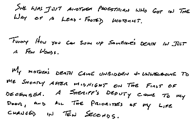
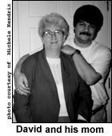

Do you remember when you were in school and you learned a new vocabulary word? From that point forward, you seemed to hear everybody using that word. Actually, people had been using the word the whole time, but you, not understanding it, had "tuned" it out. Once you understood the word, you became "aware" of it, and everywhere you turned, you heard someone using it. Personal tragedy is the same way. You wander through life knowing that people die, yet not actually being affected by it, until one day it intrudes directly into your life. The rest of the world fades to insignificance as you struggle to make sense of ugly reality. Death is something that happens to other people, but now you are other people. Suddenly, you see death everywhere, happening to people who you no longer view as strangers. How can they be strangers when you know exactly how they feel? In its way, death breaks us out of our isolated shells and makes us members of the human race again. It makes us feel not just our own grief, but the grief of humanity, the sad emptiness of loss and the gnawing pain of dreams faded.
After spending an entire week off-line, I returned to cyberspace a distracted and depressed individual. The hardest thing to deal with is the simple things. When you are online, you spend a lot of time talking to people of casual acquaintance and if you are like me, you are reluctant to speak of such weighty matters. A simple "So, how are things?" threw me into a quandary as to how to respond. I could brush it off with an equally breezy, "Oh, fine," but this seemed to dishonor the dead. I was lying. Things were not "fine," they were anything but. My world was requiring the exertion of considerable effort to be held together. Yet, to discuss such deep sense of loss with a relative stranger was to trivialize it. Worse, to drop this in someone's lap without warning, just because they were silly enough to ask a typically inconsequential question seemed to me to unfairly burden them.
Of course, all this second guessing and intense introspection can drive you rather quickly to a bad Valium habit.
This was the state of mind I was in when I stumbled across Scott Schumacher and his Goodbye Page at http://soli.inav.net/~spankee/goodbye.html. I had not set out to find him, I had simply been perusing the postings in the alt.support. grief group on Usenet, trying to decide if I wanted to actually post something. Would it help, or was I just picking at the wound? Schumacher works as a recreational therapy intern at St. Luke's Hospital in Cedar Rapids, Iowa, dealing with recovering stroke victims and the terminally ill. Death is something he deals with daily and not just with those in his charge. Scott has lost a brother and a sister, as well as three close friends his own age. Having a hard time dealing with one death, my mind comes close to shutdown trying to contemplate Scumacher's life. Yet, rather than let himself be crippled by it, Scumacher has become deeply interested in helping people deal with grief.
 "I wanted to turn my personal losses to something useful," Schumacher explains. "Even in death, we can learn from people, about how they lived and how they loved. It is the sharing of the stories of people's lives which is the last gift they leave for the living. If we but remember them, they never really cease to exist." After losing an online friend, Scumacher searched for a way to express his grief to help others who knew the person express their grief as well. His solution was The Goodbye Page, a virtual forum where people can write a letter or tell a story about those they have lost. "The most important part of the healing process is to have a sense of closure. Without that, people can never really get over the loss. This is especially true for unexpected deaths, since it leaves behind many unresolved issues," Schumacher says.
How true. Many are the sleepless nights where ill-considered or angry words have come back to mock me, words I can no longer erase with an apology.
Schumacher created The Goodbye Page to give people a place to help them let go. "I wanted to create a place where people could say all the things they wanted to say, but didn't get a chance. The page is a place where I hope people can finally let go. They can write a letter to the person they have lost and tell them how much they miss them, how angry they are at them, or anything else they feel important. I don't edit or censor what anybody wants to say."
Words to the dead, so that we may rejoin the world of the living. But do the dead hear? Do they understand? Do they smile? Do they forgive?
"I think they do," he says. "It's a personal view, but I think they do." To help this end, he plans to convert the letters posted on the page to an FM radio signal, and beam them into space, to share these life stories with the universe. And perhaps, just perhaps, send them on to the ears that need to hear them.
"I hope to have the transmitter up and running by March," Schumacher told me in February. "I have a friend who is a ham radio buff, and he is helping with the project."
In the meantime, traffic on The Goodbye Page has been slow, but steady. Since he posted a notice about the page to alt.support.grief, he has averaged a post every other day.
"Resources to help people deal with grief are pretty scarce on the 'net," Scumacher sighs. "But I hope to rectify that. There is my page, a Virtual Memorial page in England, (news:alt.support.grief), and a site here and there,and that's about it. As I get a little more time and money, I plan on expanding these resources, perhaps putting my own computer on the 'net to help people out. I want to be part of the healing."
So, I am faced with the question: "Will I place a letter on the Goodbye Page?"
Yes, in time. It will take much effort to summon the words to erase the pain and guilt, harder still to recall the
words which celebrate the joyous times, times more painful now in the recollection. I will post, because by so
doing, I will imbue my mother with a digital immortality. With each person who reads The Goodbye Page, her
story will cross a global network of resonating electrons, forever altering the quantum state of the universe by
doing so.
Mom would have loved it, as she always loved creating a fuss.